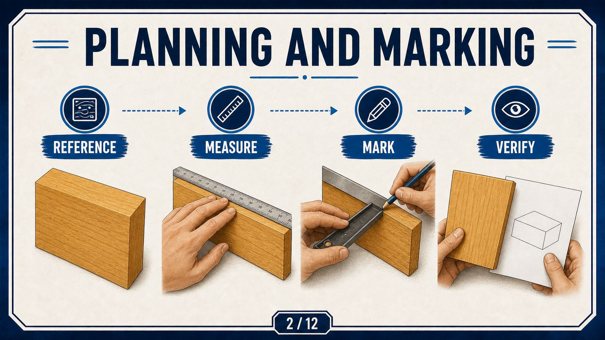
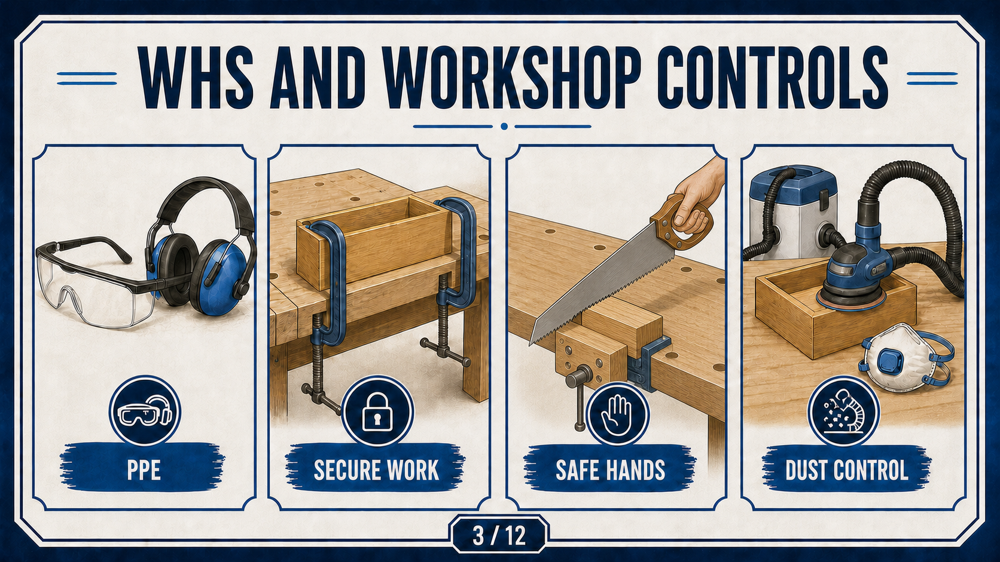

Your work
Student details
Your entries save automatically in this browser. Use Download evidence PDF before leaving the page.
Weeks 1-2
This module
Establish the approved project boundary, accurate marking routine, workshop controls and evidence plan before practical work begins.
Theory 1
Approved Small Box brief and source authority
The approved outcome is a small timber box with a fitted lid. Timber is obtained from the teacher and calculated from the required sides, top and bottom. The small hinges are teacher supplied or teacher approved so their size, profile and suitability match the project.
The approved brief, teacher-issued resources and teacher direction control dimensions, stock sizes, tolerances, settings and practical methods. Website summaries support learning but do not replace those authorities.
- Confirm the required product before planning components.
- Use only approved sources for technical detail.
- Record questions before an uncertain decision becomes irreversible.
- Keep evidence of approvals, checks and corrections.
Theory 2
Materials, measurement and marking control

Accurate work begins with suitable timber, a reliable reference and a mark that can be traced to the approved source. Inspect timber for visible defects, straightness and suitability before layout.
- Identify the required information in the approved source.
- Use a reliable reference face and edge.
- Mark clearly with the approved tool.
- Verify orientation and placement through the required check.
If a dimension, orientation or mark is unclear, stop and ask the teacher. Do not estimate from the hero image, another project or another student's work.
Theory 3
Workshop authority and hazard controls

Safety begins before a tool is selected. Remove or reduce hazards through stronger controls where possible, then use administrative controls and the required PPE as part of the complete system.
The current school SOP, teacher demonstration and teacher permission control every practical method and machine setup. Stop whenever the source, stock, guard, clamp, extraction, hand position or next action is uncertain.
- Keep the workspace clear and the work secured.
- Use only the demonstrated and approved process.
- Keep guards, extraction and other controls in place.
- Record the checks that support each practical decision.
Guided practice
Weeks 1-2 knowledge checks
Check your understanding and use hints and feedback to improve your next action.
Apply your learning
Scaffolded written responses
Write first, then compare your response with the appropriate response example.
Finish the two-week block
Save your evidence
Your work saves in this browser, but browser storage is not the official submission. Download this module PDF before changing devices or clearing browser data.
No marks, answers or personal details are sent from this webpage.